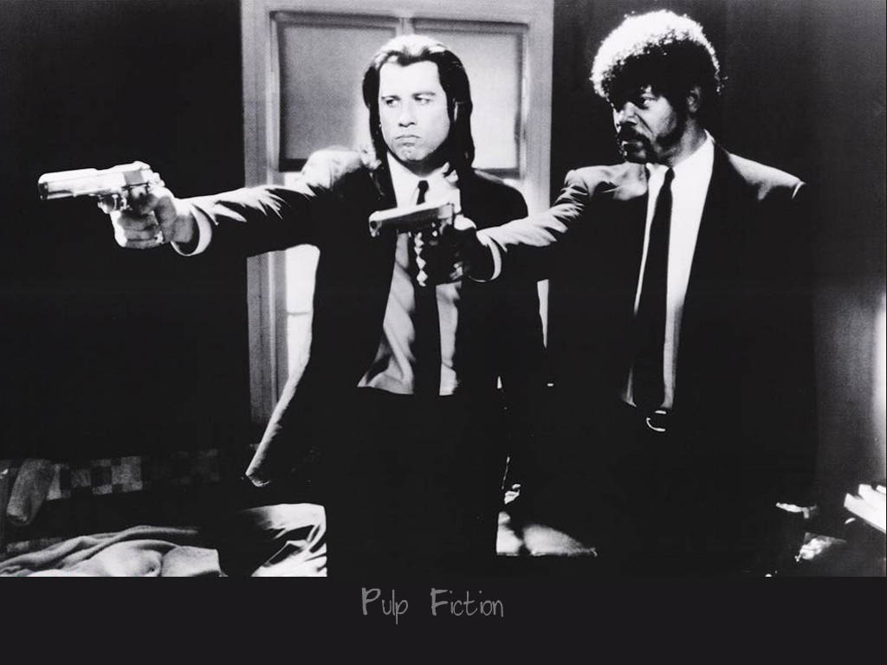

In my free time, you will usually find me obsessively listening or trying to make music. Ever since I was a little kid and first heard the Beatles, I've been totally absorbed by the feelings that a good song can bring. It's a form of entertainment that can compliment any feeling, mood, or occasion when you really need it to - as well as having the ability to add an entirely new perspective to any moment you apply it to. At the end of the day, I always look forward to sitting down, turning on an album or playlist, and letting my mind float away. A few of my favorite musical artists include (in no particular order):
Like many other people, I also really enjoy watching films, playing video games, and spending time with my family and friends. More recently, I've been getting really into Quentin Tarantino's filmography (Reservoir Dogs, Pulp Fiction, Inglorious Bastards, etc.) as well as rockumentaries like Under Great White Northern Lights, Don't Look Back, and I am Trying to Break Your Heart.
